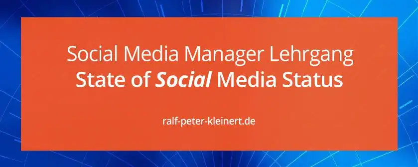

State of Social, der Status im Social Web
State of Social Media Status
Social Media Status
Ein Unternehmen muss immer wissen, wo es selbst in den sozialen Medien steht, was rund um das Unternehmen geschieht, wie die Leute reden und denken. Nur wenn es weiß was im Internet für eine Meinung herrscht, kann es erfolgreich in den sozialen Medien aggieren.
Es gibt verschiedene Modelle, den State of Social zu ermitteln. Man kann nicht sagen: "so wird das gemacht und nicht anders". Jedes Unternehmen und jeder Social Media Manager hat eine andere Herangehensweise, denn das Internet ist individuell wie seine Nutzer. Dennoch gibt es immer dieselben Fragen die Beantwortet werden müssen. Wie die Antwort gesucht und gefunden wird, unterscheidet sich von Unternehmen zu Unternehmen. Für dich ist wichtig zu wissen, welche Fragen du stellen musst.
Ohne den State of Social zu kennen, ist es für ein Unternehmen nicht möglich sinnvolle Maßnahmen in den sozialen Netzwerken zu ergreifen. Der State of Social - der Social Media Status, muss mithilfe von Analysen festgestellt werden. Hier kommen interne und externe Analysen zum Tragen, diesen sind unter anderem:
intern:
- Bestands-Analyse
- Branchen-Analyse
- Unternehmens-Analyse
- Produkt-Analyse
- Organisations-Analyse
- Prozess-Analyse
extern:
- Social Media Analyse
- Kunden- und Nutzer-Analyse
- Consumer Energy
- Consumer Journey
- Konkurrenz-Analyse
- Markt-Analyse
zum Verständnis
Auch hier können unternehmensspezifisch weitere Analysen notwendig sein oder Analysen wegfallen.